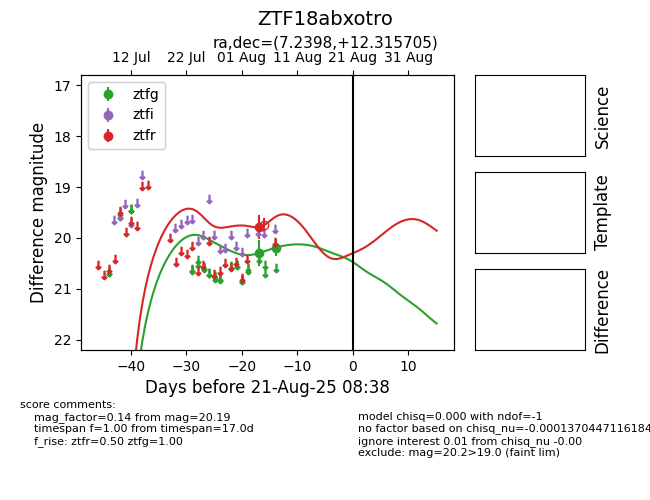

Target ZTF18abxotro at 2025-08-21 08:38, see:
FINK: fink-portal.org/ZTF18abxotro
Lasair: lasair-ztf.lsst.ac.uk/objects/ZTF18abxotro
ALeRCE: alerce.online/object/ZTF18abxotro
alt names
ZTF18abxotro (ztf,alerce)
coordinates:
equatorial (ra, dec) = (7.2398,+12.31570)
galactic (l, b) = (114.3397,-50.18065)
photometry
last ztfg=20.19, ztfr=19.79
2 ztfg, 1 ztfr detections
